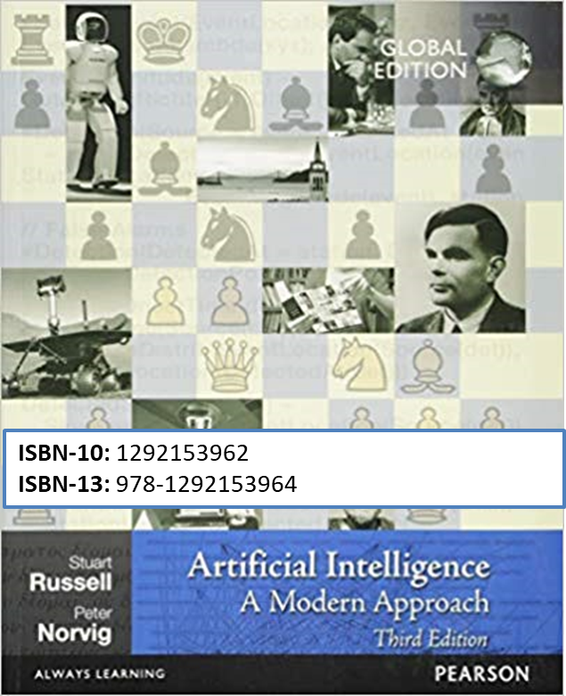
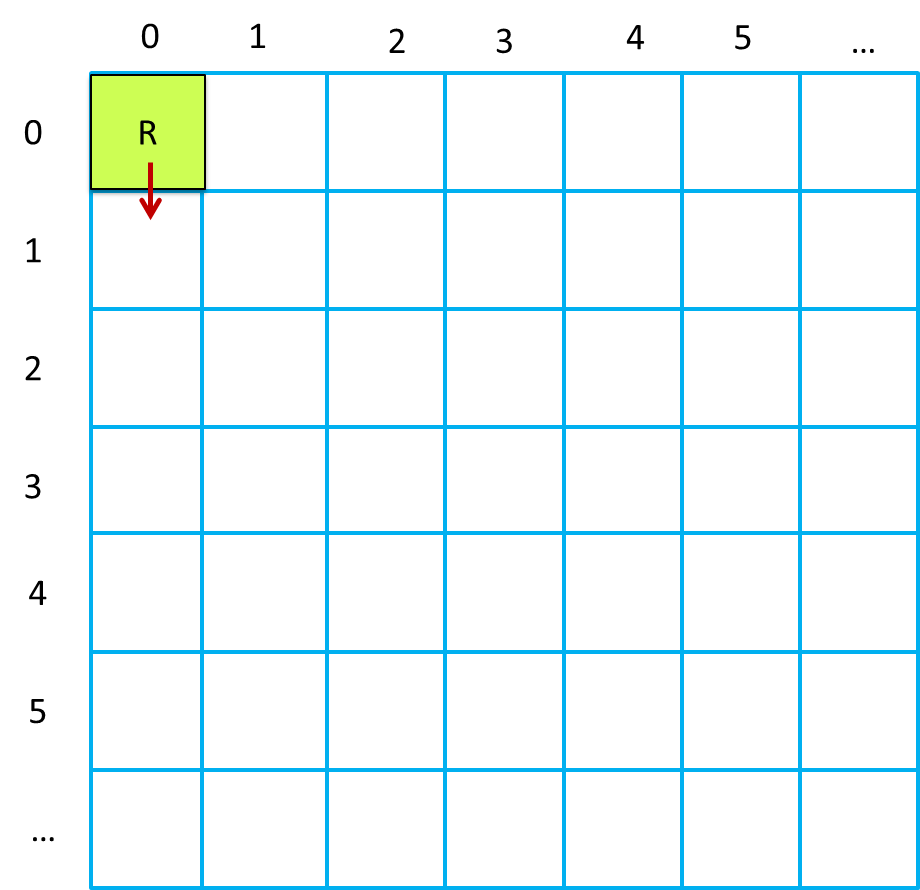

LabISS | Exploiting Planning Tools
Overview
In many ddr-robot applications, there is the need to discovery the topology of the floor and to define test plans to check
that the robot covers all the free-areas of the floor.
In these applications, the robot control software could logically operate in two phases:
- first, the robot detects (by using a planner) a proper sequence of moves according its current position
and the current state of the world (the room in which it is working.
- next, the robot actuates the move sequence, with the caution the the execution of a basicStep in the forward directio
should work also as a 'discovery action' that could lead to the interruption of the sequence for the presence of a (fixed or mobile) obstacle.
To promote the development of plan-based applications, it is wise to encapsulate the planning activity into a specialized component,
named, from now on, 'the
planner'.
At this level of analysis, the details of the behavior of the planner can be ignored.
In fact, we will exploit a set of available supports built upon the
AIMA3e-Java
library:
AIMA library
AIMA3e-Java
In particular, the Best-first search algorithm (sez. 3.5.2 of the book) as a support for search-based problem-solving agents:
AStarSearch
The initial proposal for introducing a planner has been done by the student Federico Stella; see
NotesStellaR-Map.pdf.
|
Java implementation of algorithms from:
AIBook
Russell and Norvig: Artificial Intelligence - A Modern Approach 3rd Edition.

|
The support for planning
In the project
unibo.planner23, we introduce a support
(
src/unibo/planner23/Planner23Util.java)
for planning the actions of a robot
working in logical space (a
map) composed of a set of square cells, each large as the robot.
The logical move-space
The robot is supposed to be a square device, large as a cell.
|

|
The utility Planner23Util.kt
The content of a cell has the following meaning:
r: cell occupied by the robot
1: cell free, explored by the robot
0: cell not yet explored
X: cell that contains an obstacle
The tool provides operations for:
- Creating plans
- Managing plans as action sequences
- Inspecting robot position and direction
- Managing the room-map
|
In particular:
- The operation initAI( ): initializes the planner with a BreadthFirstSearch algorithm, assuming a robot in
home position ((0,0), direction='down' - see the picture above).
The possible robot directions are: down | right | up | left.
- The operation fun setGoal( x: Int, y: Int) sets the current goal, i.e. a target position
in the room to be reached.
- The operation fun doPlan(): List<Action>
creates a plan as a list of actions (robot moves w | s | r | l | h | ...)
to move the robot form its current position
to the current target position.
- The operation fun doMove(move: String) performs a robot move
by changing the robot position in the map and the robot direction.
|
Experiment (without any robot)
Spiral walker
 The robot starts within an empty, rectangular room with unlimited surface.
The robot starts within an empty, rectangular room with unlimited surface.
The only fact known is that the robot is positioned in the cell (0,0) (its 'home').
|
Write a model spiralwalker.qak, where:
- the robot starts from its home position and performs a sequence of n, n=1..4 tours. At each tour n,
it creates a plan to reach the cell (n,n) (SUPPOSED free) and executes it;
- when the target cell (n,n) is reached, the robot executes a plan to return to its home;
afterwards it attempt to reach the cell (n+1,n+1).
- at the end, the robot stores the current map in a binary file named roomMapSquare.bin;
the representation of the map as a String is:
|r, 1, 1, 1, 1,
|1, 1, 1, 1, 1,
|1, 1, 1, 1, 1,
|1, 1, 1, 1, 1,
|1, 1, 1, 1, 1,
|